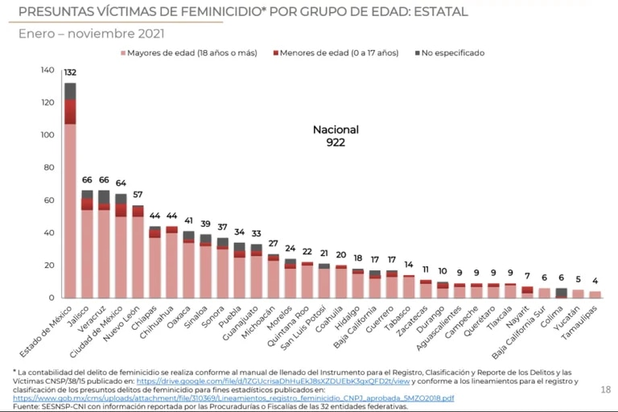

Introduccion
De acuerdo a la Segob, durante 2019 hubo alrededor 2.8 millones de mujeres mayores de 15 años en todo el pais que sufrieron violencia fisica por parte de sus parejas
El estado de Nuevo Leon registra la tasa mas alta de presuntos delitos de feminicidio por cada cien mil mujeres de 2.01 en segundo lugar Morelos con 1.96,Campeche 1.34, Chiguagua 1.13 y Oxaxaca 1.06
El promedio general nacional de feminicidios por cada cien mil mujeres es de 0.72
estos son los sitios por si quiere mas informacion
URL1 URL2